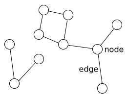

Memory Management Glossary: G¶
A | B | C | D | E | F | G | H | I | J | K | L | M | N | O | P | Q | R | S | T | U | V | W | X | Y | Z
- garbage
Garbage consists of objects that are dead.
In tracing garbage collection, the term is sometimes used to mean objects that are known to be dead; that is, objects that are unreachable.
- garbage collection
Also known as
GC.
Garbage collection (GC), also known as automatic memory management, is the automatic recycling of dynamically allocated memory(2). Garbage collection is performed by a garbage collector which recycles memory that it can prove will never be used again. Systems and languages which use garbage collection can be described as garbage-collected.
Garbage collection is a tried and tested memory management technique that has been in use since its invention in the 1950s. It avoids the need for the programmer to deallocate memory blocks explicitly, thus avoiding a number of problems: memory leaks, double frees, and premature frees. The burden on the programmer is reduced by not having to investigate such problems, thereby increasing productivity.
Garbage collection can also dramatically simplify programs, chiefly by allowing modules to present cleaner interfaces to each other: the management of object storage between modules is unnecessary.
It is not possible, in general, for a garbage collector to determine exactly which objects are still live. Even if it didn’t depend on future input, there can be no general algorithm to prove that an object is live (cf. the Halting Problem). All garbage collectors use some efficient approximation to liveness. In tracing garbage collection, the approximation is that an object can’t be live unless it is reachable. In reference counting, the approximation is that an object can’t be live unless it is referenced. Hybrid algorithms are also possible. Often the term garbage collection is used narrowly to mean only tracing garbage collection.
There is a large body of published work on particular and general garbage collection algorithms.
Historical note
Garbage collection was first invented by John McCarthy in 1958 as part of the implementation of Lisp.
Other significant languages offering garbage collection include Java, ML, Modula-3, Perl, Prolog, and Smalltalk. Major applications using garbage collection include Emacs and AutoCAD; usually, you can’t tell whether an application does or not, but these have extension languages that expose the fact.
Similar term
Opposite term
- garbage collector
Also known as
collector.
A (garbage) collector is (an implementation of) a garbage collection algorithm.
This term is often used when referring to particular implementations or algorithms, for example, “the Boehm-Demers-Weiser collector”.
- GB
See
- GC
See
- General Protection Fault
Also known as
GPF.
A General Protection Fault on the Windows platforms is the equivalent of a segmentation violation on Unix.
- generation
A generation is a set of objects of similar age.
A generational garbage collector will typically divide the set of all objects into generations, and condemn all the objects in a generation together. Rather than allowing whole generations to age, the collector(1) can promote objects into older generations as they survive successive collection cycles.
New objects are usually allocated in the youngest or nursery generation, but if we know that particular objects will be long-lived, we might want to allocate them directly in an older generation. Thus, more loosely, a generation is a set of objects which have similar expected lifetimes.
See also
In the MPS
The client program specifies the generational structure of a pool using a generation chain. See Garbage collection.
- generation chain
In the MPS
A data structure that specifies the structure of the generations in a pool. See Garbage collection.
- generation scavenging
- generational garbage collection
Also known as
generation scavenging.
Generational garbage collection is tracing garbage collection that makes use of the generational hypothesis. Objects are gathered together in generations. New objects are allocated in the youngest or nursery generation, and promoted to older generations if they survive. Objects in older generations are condemned less frequently, saving CPU time.
It is typically rare for an object to refer to a younger object. Hence, objects in one generation typically have few references to objects in younger generations. This means that the scanning of old generations in the course of collecting younger generations can be done more efficiently by means of remembered sets.
In some purely functional languages (that is, without update), all references are backwards in time, in which case remembered sets are unnecessary.
See also
- generational hypothesis
Also known as
infant mortality.
Infant mortality or the generational hypothesis is the observation that, in most cases, young objects are much more likely to die than old objects.
Strictly, the hypothesis is that the probability of death as a function of age falls faster than exponential decay (inverse hyper-exponential), but this strict condition is not always required for techniques such as generational garbage collection to be useful.
- gigabyte
Also known as
GB.
A gigabyte is 1024 megabytes, or 1073741824 bytes(1).
See byte(1) for general information on this and related quantities.
- good fit
The class of allocation policies which approximate best fit. Strict best fit may be costly to implement (depending on the details of the allocation mechanism), so some implementors approximate it, choosing a block which is close in size to the allocation request.
See also
- GPF
- grain
The grain of a platform is the smallest alignment that is sufficient to accommodate all data accesses on that platform. Often this is a word or a small multiple of a word. Double precision floating point numbers often have the strictest alignment requirements.
- graph
A graph is a set of nodes together with a set of edges connecting nodes.
If the edges have direction like arrows (for example, references in a graph of objects), then the graph is said to be a directed graph.
Directed graph.
Relevance to memory management
Graphs are used to model reachability for tracing garbage collection. The objects are considered to form a graph, with the nodes of the graph being the objects and the edges of the graph being the references from one object to another. Usually, there is a single, distinguished root to which the mutator has direct access, and the nodes strongly connected to it are the reachable modes.
- gray
grey In a tri-color marking scheme, gray objects are objects that are proved or assumed (see generational and condemn) to be reachable, but have not yet been scanned.
More precisely, gray objects have been noted reachable, but must still be visited by the collector(2) in order to process their children.
Similar term
- gray list
grey list The gray list is the set of objects that a tracing garbage collector has noted reachable, but hasn’t scanned yet.
The gray list is so called because it corresponds to the set of gray objects in the tri-color marking model of graph tracing. The gray list changes as the garbage collector progresses.
Each gray object is scanned, and all white objects referred to by it become gray and are added to the list. Scanning a gray object turns it black. When the gray list is empty, the tracing is finished, and white objects may be reclaimed.
The representation of the gray list is a key part of garbage collector design. The size of the list is potentially proportional to the size of the heap, and the operation of finding the next gray object to scan must be cheap.
See also

Previous topic
Next topic
Downloads
MPS Kit release 1.111.0
All MPS Kit releases
Issues
Known issues
Issues fixed in release 1.111.0